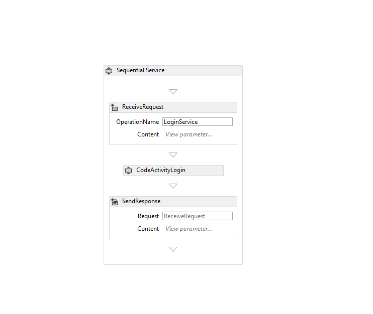
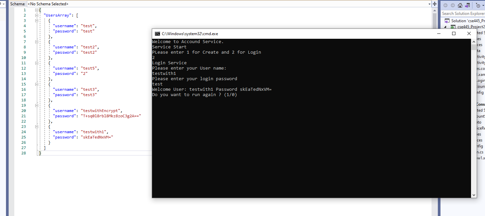

Name: Tan Thien Dao
ASU ID: 1214652569
CSE 446 Assigment 3 Workflow Project
User Mannual Tase 4.
I. Below is the diagram that whow logic of the application
II. Belllow is the workflow application
1) Flowchard
2) while Loop in side the flow chard
3) Try catch work flow
4) Accound Service Implement workflow
5) Login Service implement workflow
6) While loop to make program run again work flow
7) Code activity use in the acound service and login service
8) Work flow for New forcus Service
1) Testing Create Account
Create Accound work test case
Accound duplicate test case
2) Testing Login Account
Login work test case
Login error test case
3) Testing NewForcus Service